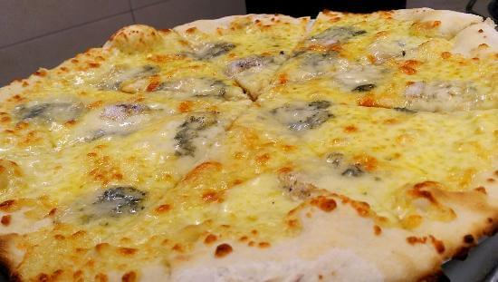

La taverne du chat borgne
"Pirate des 7 mers, nécromancien des cryptes anciennes, nain des Monts Brumeux et autres créatures soyez les bienvenues dans la taverne du chat borgne"

Pizzeia
Pizza aux 3 fromages

Introduction
La pizza est une recette de cuisine traditionnelle de la cuisine italienne, originaire de Naples en Italie (cuisine napolitaine) à base de galette de pâte à pain, garnie de divers mélanges d’ingrédients (sauce tomate, tomates séchées, légumes, fromage, charcuterie, olives, huile d'olive…)1 et cuite au four.
Plat emblématique de la culture italienne, et de la restauration rapide dans le monde entier, elle est déclinée sous de multiples variantes. « L'art de fabriquer des pizzas napolitaines artisanales traditionnelles par les pizzaïolos napolitains » est inscrit au Patrimoine mondial de l'UNESCO depuis 2017.
Liste des ingrédients
- 1 pâte à pizza
- 1 fromage de chèvre long
- 2 petit pot de coulis tomate
- 1 roquefort
- 3 sachets de gruyère râpé
- 1 petit sachet de mozzarella
-
Divers
- Sel
- Poivre
Etapes de la recette

- Etaler la pâte à pizza dans un plat à tarte, la piquer avec une fourchette, étaler le coulis de tomate sur la pâte.
- Découper des rondelles de fromage de chèvre et de mozzarella, découper aussi de fines tranches de roquefort.
- Placer le fromage en alternance (une tranche de fromage de chèvre, une de mozzarella, une de roquefort).
- Couvrir de gruyère râpé.
- Mettre au four à Thermostat 7 (210°C), pendant 1/2 heure et plus si nécessaire.
Commentaire d'un chef étoilé
Excellente expérience tout au long de cette belle ballade des sens à travers 3 fromages absoluement somptueux, tous pleines d'heureuses surprises. La présentation est soignée et charmante, et s'harmonisent très bien avec l'assiette. Les légumes rares sont à l'honneur et cuisinés avec art pour qu'ils révèlent toute leur saveur. Les associations légumes, viandes, poissons sont exquis.
Horaires d'ouverture du restaurant
| Matin | Après-midi | ||||
|---|---|---|---|---|---|
| Ouvert | Fermé | Ouvert | Fermé | ||
| Semaine | Lundi | 9h | 12h | 14h | 18h |
| Mardi au Vendredi | 8h | 12h | 13h | 18h | |
| Week-end | Samedi | 10h | 12h | 14h | 20h |
| Dimanche | 10h | 12h | 14h | 17h | |
| Les horraires sont succeptibles de changer durant l'hiver | |||||